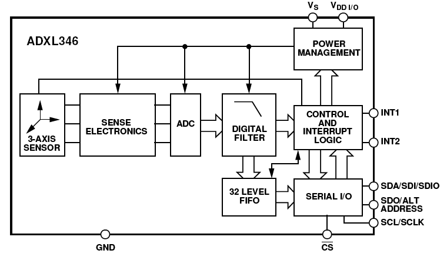
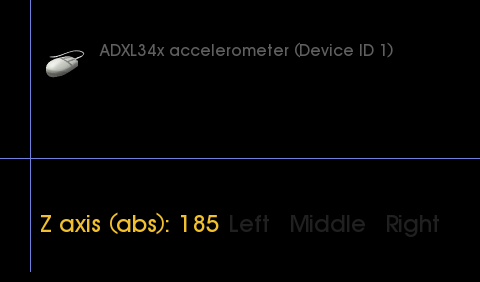
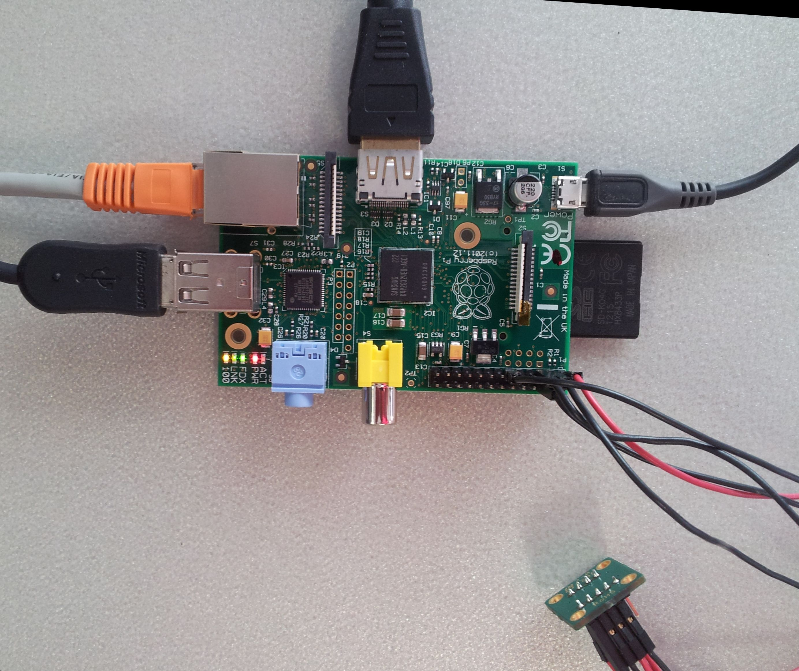

ADXL345 Input 3-Axis Digital Accelerometer Linux Driver¶
Supported Devices¶
Reference Circuits¶
Evaluation Boards¶
Description¶
{kind=link}
The ADXL345 is a small, thin, ultra low power, 3-axis accelerometer with high resolution (13-bit) measurement up to ±16 g. Digital output data is formatted as 16-bit twos complement and is accessible through either a SPI (3- or 4- wire) or I2C digital interface.
The ADXL345 is well suited for mobile device applications. It measures the static acceleration of gravity in tilt-sensing applications, as well as dynamic acceleration resulting from motion or shock. Its high resolution (4mg/LSB) enables resolution of inclination changes of as little as 0.25°.
Several special sensing functions are provided. Activity and inactivity sensing detect the presence or lack of motion and if the acceleration on any axis exceeds a user-set level. Tap sensing detects single and double taps. Free-Fall sensing detects if the device is falling. These functions can be mapped to interrupt output pins. An integrated 32 level FIFO can be used to store data to minimize host processor intervention.
Low power modes enable intelligent motion-based power management with threshold sensing and active acceleration measurement at extremely low power dissipation.
ADXL345 - Small, Ultra Low Power, 3-Axis, ±2/4/8/16g Digital Accelerometer ADXL346 - Ultra Low Power, Three-Axis, ±2/4/8/16g Digital Accelerometer ADXL375 - Low Power, Three-Axis, ±200g Digital Accelerometer
ADXL34x Hardware Features¶
ADXL345/346:
* Ultra low power
* Power consumption scales automatically with bandwidth
* User selectable fixed 10-bit resolution or 4mg/LSB scale factor in all g-ranges, up to 13-bit resolution at ±16 g
* 32 level output data FIFO minimizes host processor load
* Built in motion detection functions
* Tap/Double Tap detection
* Activity/Inactivity monitoring
* Free-Fall detection
* Supply and I/O voltage range: 1.8 V to 3.6 V (ADXL345) and 1.7 V to 2.75 V (ADXL346)
* SPI (3 and 4 wire) and I2C digital interfaces
* Flexible interrupt modes – Any interrupt mappable to either interrupt pin
* See data sheet for additional features
ADXL346:
* 4- and 6-position orientation sensing
Configuration¶
Selectable ADXL34X I2C Device Address:
| SDO | I2C Address |
|---|---|
| 0 | 0x53 |
| 1 | 0x1D |
Software configurable features¶
ADXL34x Linux Driver Features¶
ADXL345/346:
* Driver supports both SPI (3 and 4 wire) and I2C digital interface
* I2C client using the 2.6 new style binding driver model
* SPI using the generic Linux SPI Bus Driver Model
* Support for Linux Power Management (PM) suspend resume
* User selectable Sample Rate / Bandwidth trough sysfs hooks
* User selectable resolution
* Support for 32 level output data FIFO that minimizes host processor load
* Option to report acceleration as Linux Input Absolute or Relative events. (EV_ABS or EV_REL)
* Motion detection functions
* Tap/Double Tap detection
* User selectable Linux Input Event Codes for TAP_x,y,z axis
* Activity/Inactivity monitoring
* User selectable Linux Input Event Code for Activity/Inactivity reporting
* Option to minimize host processor load and save additional power by automatically switch to sleep mode during periods of inactivity.
* Free-Fall detection
* User selectable Linux Input Event Code for Free-Fall reporting
ADXL346:
* 4- and 6-position orientation sensing
* User selectable Linux Input Event Code for individual positions
Source Code¶
Status¶
Status¶
| Source | Mainlined? |
|---|---|
| git | Yes |
Files¶
| Function | File |
|---|---|
| driver | drivers/input/misc/adxl34x.c |
| i2c bus support | drivers/input/misc/adxl34x-i2c.c |
| spi bus support | drivers/input/misc/adxl34x-spi.c |
| include | include/linux/input/adxl34x.h |
ADXL345/6 driver porting¶
Starting with linux-2.6.36 the ADXL34x driver is mainlined. If you are using an pre linux-2.6.36 kernel get the source from our repositories and add them to your kernel tree.
If you are using a kernel version without the threaded irq capabilities (< 2.6.30) get there driver from here:
* Copy to linux-2.6.x/drivers/input/misc/adxl34x.c
* Copy to linux-2.6.x/drivers/input/misc/adxl34x.h
* Copy to linux-2.6.x/drivers/input/misc/adxl34x-i2c.c
* Copy to linux-2.6.x/drivers/input/misc/adxl34x-spi.c
* Copy to linux-2.6.x/include/linux/input/adxl34x.h
**For the latest version of checkout the Files section of this document. ** Add following lines to linux-2.6.x/drivers/input/misc/Kconfig:
config INPUT_ADXL34X
tristate "Analog Devices ADXL34x Three-Axis Digital Accelerometer"
default n
help
Say Y here if you have a Accelerometer interface using the
ADXL345/6 controller, and your board-specific initialization
code includes that in its table of devices.
This driver can use either I2C or SPI communication to the
ADXL345/6 controller. Select the appropriate method for
your system.
If unsure, say N (but it's safe to say "Y").
To compile this driver as a module, choose M here: the
module will be called adxl34x.
config INPUT_ADXL34X_I2C
tristate "support I2C bus connection"
depends on INPUT_ADXL34X && I2C
default y
help
Say Y here if you have ADXL345/6 hooked to an I2C bus.
To compile this driver as a module, choose M here: the
module will be called adxl34x-i2c.
config INPUT_ADXL34X_SPI
tristate "support SPI bus connection"
depends on INPUT_ADXL34X && SPI
default y
help
Say Y here if you have ADXL345/6 hooked to a SPI bus.
To compile this driver as a module, choose M here: the
module will be called adxl34x-spi.
Add following lines to linux-2.6.x/drivers/input/misc/Makefile:
obj-$(CONFIG_INPUT_ADXL34X) += adxl34x.o
obj-$(CONFIG_INPUT_ADXL34X_I2C) += adxl34x-i2c.o
obj-$(CONFIG_INPUT_ADXL34X_SPI) += adxl34x-spi.o
Example platform device initialization¶
Digital Accelerometer characteristics are highly application specific and may vary between boards and models. The platform_data for the device’s “struct device” holds this information.
/*
* include/linux/input/adxl34x.h
*
* Digital Accelerometer characteristics are highly application specific
* and may vary between boards and models. The platform_data for the
* device's "struct device" holds this information.
*
* Copyright 2009 Analog Devices Inc.
*
* Licensed under the GPL-2 or later.
*/
## ifndef __LINUX_INPUT_ADXL34X_H__
## define __LINUX_INPUT_ADXL34X_H__
struct adxl34x_platform_data {
/*
* X,Y,Z Axis Offset:
* offer user offset adjustments in twoscompliment
* form with a scale factor of 15.6 mg/LSB (i.e. 0x7F = +2 g)
*/
s8 x_axis_offset;
s8 y_axis_offset;
s8 z_axis_offset;
/*
* TAP_X/Y/Z Enable: Setting TAP_X, Y, or Z Enable enables X,
* Y, or Z participation in Tap detection. A '0' excludes the
* selected axis from participation in Tap detection.
* Setting the SUPPRESS bit suppresses Double Tap detection if
* acceleration greater than tap_threshold is present during the
* tap_latency period, i.e. after the first tap but before the
* opening of the second tap window.
*/
## define ADXL_SUPPRESS (1 << 3)
## define ADXL_TAP_X_EN (1 << 2)
## define ADXL_TAP_Y_EN (1 << 1)
## define ADXL_TAP_Z_EN (1 << 0)
u8 tap_axis_control;
/*
* tap_threshold:
* holds the threshold value for tap detection/interrupts.
* The data format is unsigned. The scale factor is 62.5 mg/LSB
* (i.e. 0xFF = +16 g). A zero value may result in undesirable
* behavior if Tap/Double Tap is enabled.
*/
u8 tap_threshold;
/*
* tap_duration:
* is an unsigned time value representing the maximum
* time that an event must be above the tap_threshold threshold
* to qualify as a tap event. The scale factor is 625 us/LSB. A zero
* value will prevent Tap/Double Tap functions from working.
*/
u8 tap_duration;
/*
* tap_latency:
* is an unsigned time value representing the wait time
* from the detection of a tap event to the opening of the time
* window tap_window for a possible second tap event. The scale
* factor is 1.25 ms/LSB. A zero value will disable the Double Tap
* function.
*/
u8 tap_latency;
/*
* tap_window:
* is an unsigned time value representing the amount
* of time after the expiration of tap_latency during which a second
* tap can begin. The scale factor is 1.25 ms/LSB. A zero value will
* disable the Double Tap function.
*/
u8 tap_window;
/*
* act_axis_control:
* X/Y/Z Enable: A '1' enables X, Y, or Z participation in activity
* or inactivity detection. A '0' excludes the selected axis from
* participation. If all of the axes are excluded, the function is
* disabled.
* AC/DC: A '0' = DC coupled operation and a '1' = AC coupled
* operation. In DC coupled operation, the current acceleration is
* compared with activity_threshold and inactivity_threshold directly
* to determine whether activity or inactivity is detected. In AC
* coupled operation for activity detection, the acceleration value
* at the start of activity detection is taken as a reference value.
* New samples of acceleration are then compared to this
* reference value and if the magnitude of the difference exceeds
* activity_threshold the device will trigger an activity interrupt. In
* AC coupled operation for inactivity detection, a reference value
* is used again for comparison and is updated whenever the
* device exceeds the inactivity threshold. Once the reference
* value is selected, the device compares the magnitude of the
* difference between the reference value and the current
* acceleration with inactivity_threshold. If the difference is below
* inactivity_threshold for a total of inactivity_time, the device is
* considered inactive and the inactivity interrupt is triggered.
*/
## define ADXL_ACT_ACDC (1 << 7)
## define ADXL_ACT_X_EN (1 << 6)
## define ADXL_ACT_Y_EN (1 << 5)
## define ADXL_ACT_Z_EN (1 << 4)
## define ADXL_INACT_ACDC (1 << 3)
## define ADXL_INACT_X_EN (1 << 2)
## define ADXL_INACT_Y_EN (1 << 1)
## define ADXL_INACT_Z_EN (1 << 0)
u8 act_axis_control;
/*
* activity_threshold:
* holds the threshold value for activity detection.
* The data format is unsigned. The scale factor is
* 62.5 mg/LSB. A zero value may result in undesirable behavior if
* Activity interrupt is enabled.
*/
u8 activity_threshold;
/*
* inactivity_threshold:
* holds the threshold value for inactivity
* detection. The data format is unsigned. The scale
* factor is 62.5 mg/LSB. A zero value may result in undesirable
* behavior if Inactivity interrupt is enabled.
*/
u8 inactivity_threshold;
/*
* inactivity_time:
* is an unsigned time value representing the
* amount of time that acceleration must be below the value in
* inactivity_threshold for inactivity to be declared. The scale factor
* is 1 second/LSB. Unlike the other interrupt functions, which
* operate on unfiltered data, the inactivity function operates on the
* filtered output data. At least one output sample must be
* generated for the inactivity interrupt to be triggered. This will
* result in the function appearing un-responsive if the
* inactivity_time register is set with a value less than the time
* constant of the Output Data Rate. A zero value will result in an
* interrupt when the output data is below inactivity_threshold.
*/
u8 inactivity_time;
/*
* free_fall_threshold:
* holds the threshold value for Free-Fall detection.
* The data format is unsigned. The root-sum-square(RSS) value
* of all axes is calculated and compared to the value in
* free_fall_threshold to determine if a free fall event may be
* occurring. The scale factor is 62.5 mg/LSB. A zero value may
* result in undesirable behavior if Free-Fall interrupt is
* enabled. Values between 300 and 600 mg (0x05 to 0x09) are
* recommended.
*/
u8 free_fall_threshold;
/*
* free_fall_time:
* is an unsigned time value representing the minimum
* time that the RSS value of all axes must be less than
* free_fall_threshold to generate a Free-Fall interrupt. The
* scale factor is 5 ms/LSB. A zero value may result in
* undesirable behavior if Free-Fall interrupt is enabled.
* Values between 100 to 350 ms (0x14 to 0x46) are recommended.
*/
u8 free_fall_time;
/*
* data_rate:
* Selects device bandwidth and output data rate.
* RATE = 3200 Hz / (2^(15 - x)). Default value is 0x0A, or 100 Hz
* Output Data Rate. An Output Data Rate should be selected that
* is appropriate for the communication protocol and frequency
* selected. Selecting too high of an Output Data Rate with a low
* communication speed will result in samples being discarded.
*/
u8 data_rate;
/*
* data_range:
* FULL_RES: When this bit is set with the device is
* in Full-Resolution Mode, where the output resolution increases
* with RANGE to maintain a 4 mg/LSB scale factor. When this
* bit is cleared the device is in 10-bit Mode and RANGE determine the
* maximum g-Range and scale factor.
*/
## define ADXL_FULL_RES (1 << 3)
## define ADXL_RANGE_PM_2g 0
## define ADXL_RANGE_PM_4g 1
## define ADXL_RANGE_PM_8g 2
## define ADXL_RANGE_PM_16g 3
u8 data_range;
/*
* low_power_mode:
* A '0' = Normal operation and a '1' = Reduced
* power operation with somewhat higher noise.
*/
u8 low_power_mode;
/*
* power_mode:
* LINK: A '1' with both the activity and inactivity functions
* enabled will delay the start of the activity function until
* inactivity is detected. Once activity is detected, inactivity
* detection will begin and prevent the detection of activity. This
* bit serially links the activity and inactivity functions. When '0'
* the inactivity and activity functions are concurrent. Additional
* information can be found in the ADXL34x datasheet's Application
* section under Link Mode.
* AUTO_SLEEP: A '1' sets the ADXL34x to switch to Sleep Mode
* when inactivity (acceleration has been below inactivity_threshold
* for at least inactivity_time) is detected and the LINK bit is set.
* A '0' disables automatic switching to Sleep Mode. See the
* Sleep Bit section of the ADXL34x datasheet for more information.
*/
## define ADXL_LINK (1 << 5)
## define ADXL_AUTO_SLEEP (1 << 4)
u8 power_mode;
/*
* fifo_mode:
* BYPASS The FIFO is bypassed
* FIFO FIFO collects up to 32 values then stops collecting data
* STREAM FIFO holds the last 32 data values. Once full, the FIFO's
* oldest data is lost as it is replaced with newer data
*
* DEFAULT should be ADXL_FIFO_STREAM
*/
## define ADXL_FIFO_BYPASS 0
## define ADXL_FIFO_FIFO 1
## define ADXL_FIFO_STREAM 2
u8 fifo_mode;
/*
* watermark:
* The Watermark feature can be used to reduce the interrupt load
* of the system. The FIFO fills up to the value stored in watermark
* [1..32] and then generates an interrupt.
* A '0' disables the watermark feature.
*/
u8 watermark;
/*
* When acceleration measurements are received from the ADXL34x
* events are sent to the event subsystem. The following settings
* select the event type and event code for new x, y and z axis data
* respectively.
*/
u32 ev_type; /* EV_ABS or EV_REL */
u32 ev_code_x; /* ABS_X,Y,Z or REL_X,Y,Z */
u32 ev_code_y; /* ABS_X,Y,Z or REL_X,Y,Z */
u32 ev_code_z; /* ABS_X,Y,Z or REL_X,Y,Z */
/*
* A valid BTN or KEY Code; use tap_axis_control to disable
* event reporting
*/
u32 ev_code_tap[3]; /* EV_KEY {X-Axis, Y-Axis, Z-Axis} */
/*
* A valid BTN or KEY Code for Free-Fall or Activity enables
* input event reporting. A '0' disables the Free-Fall or
* Activity reporting.
*/
u32 ev_code_ff; /* EV_KEY */
u32 ev_code_act_inactivity; /* EV_KEY */
/*
* Use ADXL34x INT2 pin instead of INT1 pin for interrupt output
*/
u8 use_int2;
/*
* ADXL346 only ORIENTATION SENSING feature
* The orientation function of the ADXL346 reports both 2-D and
* 3-D orientation concurrently.
*/
## define ADXL_EN_ORIENTATION_2D 1
## define ADXL_EN_ORIENTATION_3D 2
## define ADXL_EN_ORIENTATION_2D_3D 3
u8 orientation_enable;
/*
* The width of the deadzone region between two or more
* orientation positions is determined by setting the Deadzone
* value. The deadzone region size can be specified with a
* resolution of 3.6deg. The deadzone angle represents the total
* angle where the orientation is considered invalid.
*/
## define ADXL_DEADZONE_ANGLE_0p0 0 /* !!!0.0 [deg] */
## define ADXL_DEADZONE_ANGLE_3p6 1 /* 3.6 [deg] */
## define ADXL_DEADZONE_ANGLE_7p2 2 /* 7.2 [deg] */
## define ADXL_DEADZONE_ANGLE_10p8 3 /* 10.8 [deg] */
## define ADXL_DEADZONE_ANGLE_14p4 4 /* 14.4 [deg] */
## define ADXL_DEADZONE_ANGLE_18p0 5 /* 18.0 [deg] */
## define ADXL_DEADZONE_ANGLE_21p6 6 /* 21.6 [deg] */
## define ADXL_DEADZONE_ANGLE_25p2 7 /* 25.2 [deg] */
u8 deadzone_angle;
/*
* To eliminate most human motion such as walking or shaking,
* a Divisor value should be selected to effectively limit the
* orientation bandwidth. Set the depth of the filter used to
* low-pass filter the measured acceleration for stable
* orientation sensing
*/
## define ADXL_LP_FILTER_DIVISOR_2 0
## define ADXL_LP_FILTER_DIVISOR_4 1
## define ADXL_LP_FILTER_DIVISOR_8 2
## define ADXL_LP_FILTER_DIVISOR_16 3
## define ADXL_LP_FILTER_DIVISOR_32 4
## define ADXL_LP_FILTER_DIVISOR_64 5
## define ADXL_LP_FILTER_DIVISOR_128 6
## define ADXL_LP_FILTER_DIVISOR_256 7
u8 divisor_length;
u32 ev_codes_orient_2d[4]; /* EV_KEY {+X, -X, +Y, -Y} */
u32 ev_codes_orient_3d[6]; /* EV_KEY {+Z, +Y, +X, -X, -Y, -Z} */
};
## endif
Example Platform / Board file (SPI Interface Option)¶
These snippets are all from the same file. arch/blackfin/mach-bf548/boards/ezkit.c:
## include <linux/spi/adxl34x.h>
## if defined(CONFIG_INPUT_ADXL34X) || defined(CONFIG_INPUT_ADXL34X_MODULE)
## include <linux/input/adxl34x.h>
static const struct adxl34x_platform_data adxl34x_info = {
.x_axis_offset = 0,
.y_axis_offset = 0,
.z_axis_offset = 0,
.tap_threshold = 0x31,
.tap_duration = 0x10,
.tap_latency = 0x60,
.tap_window = 0xF0,
.tap_axis_control = ADXL_TAP_X_EN | ADXL_TAP_Y_EN | ADXL_TAP_Z_EN,
.act_axis_control = 0xFF,
.activity_threshold = 5,
.inactivity_threshold = 3,
.inactivity_time = 4,
.free_fall_threshold = 0x7,
.free_fall_time = 0x20,
.data_rate = 0x8,
.data_range = ADXL_FULL_RES,
.ev_type = EV_ABS,
.ev_code_x = ABS_X, /* EV_REL */
.ev_code_y = ABS_Y, /* EV_REL */
.ev_code_z = ABS_Z, /* EV_REL */
.ev_code_tap = {BTN_TOUCH, BTN_TOUCH, BTN_TOUCH}, /* EV_KEY x,y,z */
/* .ev_code_ff = KEY_F,*/ /* EV_KEY */
/* .ev_code_act_inactivity = KEY_A,*/ /* EV_KEY */
.power_mode = ADXL_AUTO_SLEEP | ADXL_LINK,
.fifo_mode = ADXL_FIFO_STREAM,
.orientation_enable = ADXL_EN_ORIENTATION_3D,
.deadzone_angle = ADXL_DEADZONE_ANGLE_10p8,
.divisor_length = ADXL_LP_FILTER_DIVISOR_16,
/* EV_KEY {+Z, +Y, +X, -X, -Y, -Z} */
.ev_codes_orient_3d = {BTN_Z, BTN_Y, BTN_X, BTN_A, BTN_B, BTN_C},
};
## endif
static struct spi_board_info board_spi_board_info[] __initdata = {
## if defined(CONFIG_INPUT_ADXL34X_SPI) || defined(CONFIG_INPUT_ADXL34X_SPI_MODULE)
{
.modalias = "adxl34x",
.platform_data = &adxl34x_info,
.irq = IRQ_XYZ,
.max_speed_hz = 5000000, /* max spi clock (SCK) speed in HZ */
.bus_num = 1,
.chip_select = 2,
.mode = SPI_MODE_3,
},
## endif
};
static int __init board_init(void)
{
[--snip--]
spi_register_board_info(board_spi_board_info, ARRAY_SIZE(board_spi_board_info));
[--snip--]
return 0;
}
arch_initcall(board_init);
Devicetree¶
Required devicetree properties:
compatible: Needs to be “adi,” followed by the name of the device. E.g. “adi,adxl34x”
reg: The chipselect number used for the device
spi-max-frequency: Maximum SPI clock frequency
spi-cpha: Needs to be set for the correct SPI mode
spi-cpol: Needs to be set for the correct SPI mode
interrupt-parent: Specifies which IRQ controller is used
interrupts: The interrupt associated with the INT2 pin
axi_spi_1: spi@42040000 {
#address-cells = <1>;
#size-cells = <0>;
compatible = "xlnx,axi-spi-1.02.a", "xlnx,xps-spi-2.00.a";
...
adxl345@0 {
compatible = "adi,adxl34x";
reg = <0>;
spi-max-frequency = <1000000>;
spi-cpha;
spi-cpol;
interrupt-parent = <&gic>;
interrupts = < 0 32 4 >;
};
};
Example Platform / Board file (I2C Interface Option)¶
These snippets are all from the same file. arch/blackfin/mach-bf548/boards/ezkit.c:
static struct i2c_board_info __initdata board_i2c_board_info[] = {
## if defined(CONFIG_INPUT_ADXL34X_I2C) || defined(CONFIG_INPUT_ADXL34X_I2C_MODULE)
{
I2C_BOARD_INFO("adxl34x", 0x53),
.irq = IRQ_XYZ,
.platform_data = (void *)&adxl34x_info,
},
## endif
};
static int __init board_init(void)
{
[--snip--]
i2c_register_board_info(0, board_i2c_board_info,
ARRAY_SIZE(board_i2c_board_info));
[--snip--]
return 0;
}
arch_initcall(board_init);
Devicetree¶
Required devicetree properties:
compatible: Needs to be “adi,” followed by the name of the device. E.g. “adi,adxl34x”
reg: The slave address of the device
interrupt-parent: Specifies which IRQ controller is used
interrupts: The interrupt associated with the INT2 pin
axi_iic_1: i2c@41640000 {
#address-cells = <1>;
#size-cells = <0>;
compatible = "xlnx,axi-iic-1.02.a", "xlnx,xps-iic-2.00.a";
...
adxl345@0 {
compatible = "adi,adxl34x";
reg = <0x53>;
interrupt-parent = <&gic>;
interrupts = < 0 32 4 >;
};
};
Adding Linux driver support¶
Configure kernel with “make menuconfig” (alternatively use “make xconfig” or “make qconfig”)
Note
The ADXL34x Driver depends on CONFIG_SPI or CONFIG_I2C
Input device support
-*- Generic input layer (needed for keyboard, mouse, ...)
< > Support for memoryless force-feedback devices
< > Polled input device skeleton
< > Sparse keymap support library
*** Userland interfaces ***
< > Mouse interface
< > Joystick interface
<*> Event interface
< > Event debugging
*** Input Device Drivers ***
[ ] Keyboards --->
[ ] Mice --->
[ ] Joysticks/Gamepads --->
[ ] Tablets --->
[ ] Touchscreens --->
[*] Miscellaneous devices --->
< > Analog Devices AD714x Capacitance Touch Sensor
<*> Analog Devices ADXL34x Three-Axis Digital Accelerometer
<*> support I2C bus connection (NEW)
<*> support SPI bus connection (NEW)
Hardware I/O ports --->
Hardware configuration¶
Driver testing¶
Driver compiled as a module¶
I2C Interface:
SPI Interface:
Driver compiled into the kernel¶
Your kernel startup messages should include something like this
I2C Interface:
input: ADXL34x accelerometer as /devices/platform/i2c-bfin-twi.1/i2c-adapter/i2c-1/1-0053/input/input1
adxl34x 1-0053: ADXL345 accelerometer, irq 140
SPI Interface:
input: ADXL34x accelerometer as /devices/platform/bfin-spi.1/spi1.2/input/input1
adxl34x spi1.2: ADXL345 accelerometer, irq 140
Common Problems¶
In case you see a message like this
adxl34x spi1.2: Failed to probe ADXL34x accelerometer
This means that the SPI communication and initilaization with the ADXL34x failed. check bus_num and chip_select in your platform device file
Checking for proper installation¶
After the kernel boot your device folder should include at least one device node for the accelerometer
Check that the interrupt is registered.
Use the evtest utility to test proper function¶
root:/> evtest /dev/input/event1
Input driver version is 1.0.0
Input device ID: bus 0x18 vendor 0x0 product 0x159 version 0x0
Input device name: "ADXL34x accelerometer"
Supported events:
Event type 0 (Reset)
Event code 0 (Reset)
Event code 1 (Key)
Event code 3 (Absolute)
Event type 1 (Key)
Event code 330 (Touch)
Event type 3 (Absolute)
Event code 0 (X)
Value 15
Min -4096
Max 4096
Fuzz 3
Flat 3
Event code 1 (Y)
Value -15
Min -4096
Max 4096
Fuzz 3
Flat 3
Event code 2 (Z)
Value 242
Min -4096
Max 4096
Fuzz 3
Flat 3
Testing ... (interrupt to exit)
Event: time 107831.548000, type 3 (Absolute), code 0 (X), value -7
Event: time 107831.548000, type 3 (Absolute), code 1 (Y), value -2
Event: time 107831.548000, type 3 (Absolute), code 2 (Z), value 12
Event: time 107831.548000, type 0 (Reset), code 0 (Reset), value 0
Event: time 107831.588000, type 3 (Absolute), code 0 (X), value -17
Event: time 107831.588000, type 3 (Absolute), code 1 (Y), value 4
Event: time 107831.588000, type 0 (Reset), code 0 (Reset), value 0
Event: time 107831.632000, type 3 (Absolute), code 0 (X), value -16
Event: time 107831.632000, type 3 (Absolute), code 2 (Z), value 11
Note
In case you move the accelerometer and don’t receive events, it’s likely that something with your Interrupt is wrong. check irq number in your platform device file
Note
In case you get a message like: evtest: No such device, it’s likely that you have not install the necessary modules
Visualizing Linux Input Events using df_input example from DirectFB¶
root:/> df_input &
~~~~~~~~~~~~~~~~~~~~~~~~~~| DirectFB 1.2.7 |~~~~~~~~~~~~~~~~~~~~~~~~~~
(c) 2001-2008 The world wide DirectFB Open Source Community
(c) 2000-2004 Convergence (integrated media) GmbH
----------------------------------------------------------------
(*) DirectFB/Core: Single Application Core. (2009-05-27 15:03)
[1] 401 df_input
root:/> (*) Direct/Thread: Started 'VT Switcher' (405) [CRITICAL OTHER/OTHER 0/0] <12288>...
(*) Direct/Thread: Started 'Keyboard Input' (406) [INPUT OTHER/OTHER 0/0] <12288>...
(*) DirectFB/Input: Keyboard 0.9 (directfb.org)
(*) Direct/Thread: Started 'Linux Input' (407) [INPUT OTHER/OTHER 0/0] <12288>...
(*) DirectFB/Input: bf54x-keys (1) 0.1 (directfb.org)
(*) Direct/Thread: Started 'Linux Input' (408) [INPUT OTHER/OTHER 0/0] <12288>...
(*) DirectFB/Input: ADXL34x accelerometer (2) 0.1 (directfb.org)
(*) DirectFB/Graphics: Generic Software Rasterizer 0.6 (directfb.org)
(*) DirectFB/Core/WM: Default 0.3 (directfb.org)
(*) FBDev/Surface: Allocated 480x272 24 bit RGB24 buffer (index 0) at offset 0 and pitch 1440.
(*) FBDev/Surface: Allocated 480x272 24 bit RGB24 buffer (index 0) at offset 0 and pitch 1440.
(*) Direct/Interface: Loaded 'FT2' implementation of 'IDirectFBFont'.
(*) Direct/Interface: Loaded 'PNG' implementation of 'IDirectFBImageProvider'.
root:/>

ADXL34x Sysfs runtime controls¶
Device Calibration¶
Controlling the Output Data Rate¶
| Output Data Rate (Hz) | Bandwidth (Hz) | Value |
|---|---|---|
| 3200 | 1600 | 15 |
| 1600 | 800 | 14 |
| 800 | 400 | 13 |
| 400 | 200 | 12 |
| 200 | 100 | 11 |
| 100 | 50 | 10 |
| 50 | 25 | 9 |
| 25 | 12.5 | 8 |
| 12.5 | 6.25 | 7 |
| 6.25 | 3.125 | 6 |
| 3.125 | 1.563 | 5 |
| 1.563 | 0.782 | 4 |
| 0.782 | 0.39 | 3 |
| 0.39 | 0.195 | 2 |
| 0.195 | 0.098 | 1 |
| 0.098 | 0.048 | 0 |
Writing ‘value’ into rate sets the desired sample rate Reading rate returns the current value See table above for supported sample rates
Note
Be aware: The ADXL34x conforms to The I2C Bus Specification, Version 2.1, January 2000, available from Phillips Semiconductor. It supports standard (100 kHz) and fast (400 kHz) data transfer modes.
Very high output data rates are only possible via fast I2C (400kHz) or the SPI interface.
Enabling / Disabling the Device¶
Writing ‘1’ into disable - disables the ADXL34x (low power suspend mode) Writing ‘0’ into disable - enables the ADXL34x
Enabling / Disabling Autosleep Upon Inactivity¶
Writing ‘1’ into autosleep - enables Autosleep Upon Inactivity Writing ‘0’ into autosleep - disables Autosleep Upon Inactivity
ADXL345 on Raspberry Pi - A worked example¶
Create an SD Card image¶
Download Raspbian “wheezy” SD Card Image from here: http://www.raspberrypi.org/downloads
Note
This example assumes that /dev/sdc is the SD-Card reader. All content will be lost!
Note
Hint
This specifies any shell prompt running on the target
Dave@HAL9000:~/devel/pshare/RaspberryPi$ **unzip 2012-08-16-wheezy-raspbian.zip**
Archive: 2012-08-16-wheezy-raspbian.zip
inflating: 2012-08-16-wheezy-raspbian.img
Dave@HAL9000:~/devel/pshare/RaspberryPi$ **sudo dd bs=1M if=2012-08-16-wheezy-raspbian.img of=/dev/sdc**
[sudo] password for michael:
1850+0 records in
1850+0 records out
1939865600 bytes (1.9 GB) copied, 434.764 s, 4.5 MB/s
Dave@HAL9000:~/devel/pshare/RaspberryPi$
Compile a kernel
There are two ways to compile a new Kernel -
On the target itself
On a development computer (host)
Note
In order to speed things up - we compile the kernel on a foreign host.
Get ARM tools and RaspberryPi kernel source¶
Create an empty directory¶
Note
Hint
This specifies any shell prompt running on the target
Dave@HAL9000:~/devel/git$ **mkdir RaspberryPi**
Dave@HAL9000:~/devel/git$ **cd RaspberryPi**
Get tools
Note
Hint
This specifies any shell prompt running on the target
Dave@HAL9000:~/devel/git/RaspberryPi$ **git clone https://github.com/raspberrypi/tools.git**
Initialized empty Git repository in /home/michael/devel/git/RaspberryPi/tools/.git/
remote: Counting objects: 11148, done.
remote: Compressing objects: 100% (5752/5752), done.
remote: Total 11148 (delta 6433), reused 9628 (delta 4913)
Receiving objects: 100% (11148/11148), 219.74 MiB | 359 KiB/s, done.
Resolving deltas: 100% (6433/6433), done.
Checking out files: 100% (10692/10692), done.
Get Kernel Source
Note
Hint
This specifies any shell prompt running on the target
Dave@HAL9000:~/devel/git/RaspberryPi$ **git clone https://github.com/raspberrypi/linux.git**
Initialized empty Git repository in /home/michael/devel/git/RaspberryPi/linux/.git/
remote: Counting objects: 2287525, done.
remote: Compressing objects: 100% (360373/360373), done.
remote: Total 2287525 (delta 1911472), reused 2276887 (delta 1905269)
Receiving objects: 100% (2287525/2287525), 468.96 MiB | 566 KiB/s, done.
Resolving deltas: 100% (1911472/1911472), done.
Checking out files: 100% (37972/37972), done.
Dave@HAL9000:~/devel/git/RaspberryPi$
Note
See here: http://elinux.org/RPi_Kernel_Compilation
Download and apply patches¶
Get patch files here:
Note
This was tested with the Raspberry Pi Model B, PCB Version 2 (made in UK) The primary and secondary I2C channels have been reversed.
You may need to register i2c board info for Bus-0 instead of Bus-1.
/* From arch/arm/mach-bcm2708/bcm2708.c */
## ifdef CONFIG_I2C
i2c_register_board_info(0, bcm2708_i2c_board_info,
ARRAY_SIZE(bcm2708_i2c_board_info));
## endif
Note
Hint
This specifies any shell prompt running on the target
Dave@HAL9000:~/devel/git/RaspberryPi/linux$ **git am 0001-input-adxl34x-quick-hack-for-BCM2807-which-doesn-t-s.patch**
Applying: input: adxl34x: quick hack for BCM2807 which doesn't support level sensitive interrupts
Dave@HAL9000:~/devel/git/RaspberryPi/linux$ **git am 0002-platform-RaspberryPi-provide-i2c-board-info-for-ADXL.patch**
Applying: platform: RaspberryPi: provide i2c board info for ADXL345 Accelerometer.
Dave@HAL9000:~/devel/git/RaspberryPi/linux$
Add ARM toolchain to the PATH variable and set ARCH and CROSS_COMPILE
Note
Hint
This specifies any shell prompt running on the target
Dave@HAL9000:~/devel/git/RaspberryPi/linux$ **export PATH=/home/michael/devel/git/RaspberryPi/tools/arm-bcm2708/gcc-linaro-arm-linux-gnueabihf-raspbian/bin/:$PATH**
Dave@HAL9000:~/devel/git/RaspberryPi/linux$ **export ARCH=arm**
Dave@HAL9000:~/devel/git/RaspberryPi/linux$ **export CROSS_COMPILE=arm-linux-gnueabihf-**
Load kernel config for bcmrpi
Note
Hint
This specifies any shell prompt running on the target
Dave@HAL9000:~/devel/git/RaspberryPi/linux$ **make bcmrpi_defconfig**
#
# configuration written to .config
#
Now build your kernel
Note
Hint
This specifies any shell prompt running on the target
Dave@HAL9000:~/devel/git/RaspberryPi/linux$ **make -j5**
Copy kernel image and modules to SD Card
Note
Hint
This specifies any shell prompt running on the target
Dave@HAL9000:~/devel/git/RaspberryPi/linux$ **cp arch/arm/boot/zImage /media/A1B1-918F/kernel.img**
Dave@HAL9000:~/devel/git/RaspberryPi/linux$ **sudo ARCH=arm make modules_install INSTALL_MOD_PATH=/media/10b4c001-2137-4418-b29e-57b7d15a6cbc**
Connect ADXL345 development Board
{kind=link}
http://elinux.org/RPi_Low-level_peripherals
Connect ADXL345 SDA, SCL and INT1 to the RaspberryPi GPIO header P1
Power up your Raspberry Pi
Load the I2C Bus driver module
Note
Hint
This specifies any shell prompt running on the target
pi@raspberrypi ~ $ **sudo modprobe i2c-bcm2708**
Check if ADXL345 was successfully probed / instantiated
Note
Hint
This specifies any shell prompt running on the target
pi@raspberrypi ~ $ **dmesg | grep ADXL**
[ 44.858034] input: ADXL34x accelerometer as /devices/platform/bcm2708_i2c.1/i2c-1/1-0053/input/input2
pi@raspberrypi ~ $
Get evtest tool
Note
Hint
This specifies any shell prompt running on the target
pi@raspberrypi ~ $ **sudo apt-get install evtest**
Driver test
Note
Hint
This specifies any shell prompt running on the target
pi@raspberrypi ~ $ **evtest /dev/input/event2**
Input driver version is 1.0.1
Input device ID: bus 0x18 vendor 0x0 product 0x159 version 0x0
Input device name: "ADXL34x accelerometer"
Supported events:
Event type 0 (EV_SYN)
Event type 1 (EV_KEY)
Event code 330 (BTN_TOUCH)
Event type 3 (EV_ABS)
Event code 0 (ABS_X)
Value 43
Min -4096
Max 4096
Fuzz 3
Flat 3
Event code 1 (ABS_Y)
Value -9
Min -4096
Max 4096
Fuzz 3
Flat 3
Event code 2 (ABS_Z)
Value 52
Min -4096
Max 4096
Fuzz 3
Flat 3
Properties:
Testing ... (interrupt to exit)
Event: time 1345080074.937061, type 3 (EV_ABS), code 0 (ABS_X), value 188
Event: time 1345080074.937065, type 3 (EV_ABS), code 1 (ABS_Y), value -136
Event: time 1345080074.937066, type 3 (EV_ABS), code 2 (ABS_Z), value 106
Event: time 1345080074.937069, -------------- SYN_REPORT ------------
Event: time 1345080074.976842, type 3 (EV_ABS), code 0 (ABS_X), value 197
Event: time 1345080074.976847, type 3 (EV_ABS), code 1 (ABS_Y), value -134
Event: time 1345080074.976848, type 3 (EV_ABS), code 2 (ABS_Z), value 112
Event: time 1345080074.976850, -------------- SYN_REPORT ------------
Event: time 1345080075.016672, type 3 (EV_ABS), code 0 (ABS_X), value 188
Event: time 1345080075.016676, type 3 (EV_ABS), code 1 (ABS_Y), value -133
Event: time 1345080075.016677, type 3 (EV_ABS), code 2 (ABS_Z), value 110
Event: time 1345080075.016679, -------------- SYN_REPORT ------------
Event: time 1345080075.056513, type 3 (EV_ABS), code 0 (ABS_X), value 189
Event: time 1345080075.056516, type 3 (EV_ABS), code 1 (ABS_Y), value -131
Event: time 1345080075.056518, type 3 (EV_ABS), code 2 (ABS_Z), value 99
Event: time 1345080075.056520, -------------- SYN_REPORT ------------
Event: time 1345080075.096264, type 3 (EV_ABS), code 0 (ABS_X), value 188
Event: time 1345080075.096267, type 3 (EV_ABS), code 1 (ABS_Y), value -125
Event: time 1345080075.096269, -------------- SYN_REPORT ------------
Note
Hint
This specifies any shell prompt running on the target
pi@raspberrypi ~ $ **cat /proc/interrupts**
CPU0
3: 9183 ARMCTRL BCM2708 Timer Tick
52: 784 ARMCTRL BCM2708 GPIO catchall handler
65: 2 ARMCTRL ARM Mailbox IRQ
66: 1 ARMCTRL VCHIQ doorbell
75: 2615599 ARMCTRL dwc_otg, dwc_otg_pcd, dwc_otg_hcd:usb1
77: 9041 ARMCTRL bcm2708_sdhci (dma)
79: 9469 ARMCTRL bcm2708_i2c.0, bcm2708_i2c.1
83: 20 ARMCTRL uart-pl011
84: 14411 ARMCTRL mmc0
**187: 784 GPIO 1-0053**
Err: 0
Note
Hint
This specifies any shell prompt running on the target
pi@raspberrypi /sys/bus/i2c/devices/1-0053 $ **ls -l**
total 0
-rw-rw-r-- 1 root root 4096 Aug 16 01:22 autosleep
-rw-rw-r-- 1 root root 4096 Aug 16 01:22 calibrate
-rw-rw-r-- 1 root root 4096 Aug 16 01:22 disable
lrwxrwxrwx 1 root root 0 Aug 16 01:22 driver -> ../../../../../bus/i2c/drivers/adxl34x
drwxr-xr-x 3 root root 0 Aug 16 01:22 input
-r--r--r-- 1 root root 4096 Aug 16 01:22 modalias
-r--r--r-- 1 root root 4096 Aug 16 01:22 name
-r--r--r-- 1 root root 4096 Aug 16 01:22 position
drwxr-xr-x 2 root root 0 Aug 16 01:22 power
-rw-rw-r-- 1 root root 4096 Aug 16 01:22 rate
lrwxrwxrwx 1 root root 0 Aug 16 01:22 subsystem -> ../../../../../bus/i2c
-rw-r--r-- 1 root root 4096 Aug 16 01:22 uevent
pi@raspberrypi /sys/bus/i2c/devices/1-0053 $
More Information
ADXL345/6 Android Acceleration Sensor
Using this driver under Android as Acceleration Sensor Follow the link here ADXL345 Android Sensor